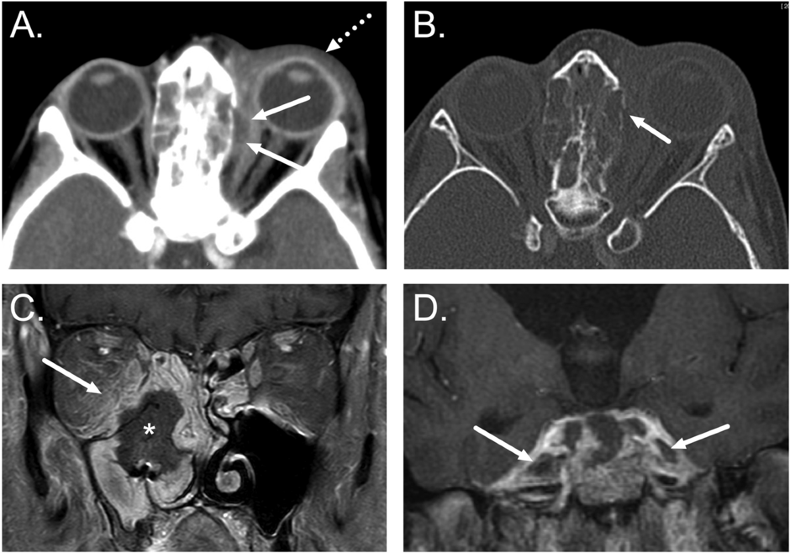
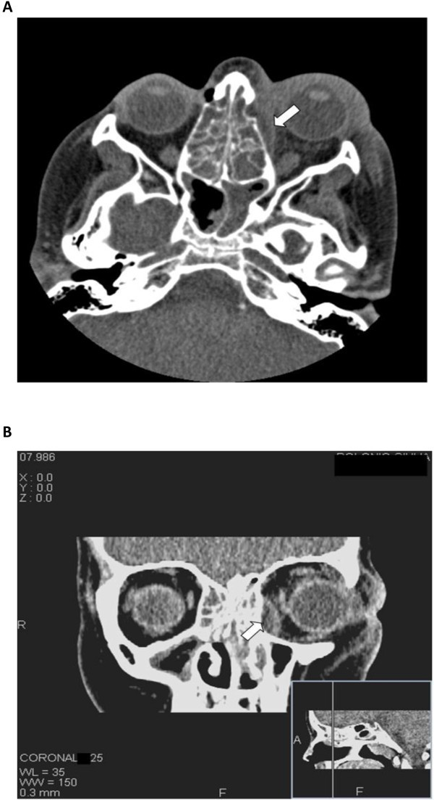
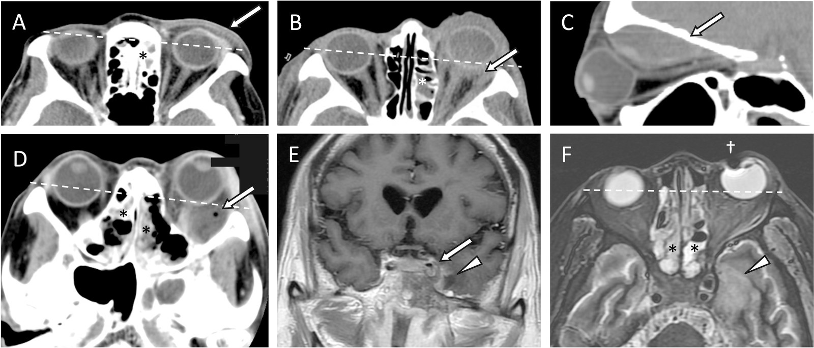

1461 — Áp-xe dưới màng xương hốc mắt ở trẻ: mủ nằm GIỮA xương và màng xương / Subperiosteal orbital abscess (SPOA)
Tags: pattern:ap-xe pattern:o-dich-ngoai-non pattern:viem-xoang pattern:chèn-ép-thi-thần-kinh vung:mat vung:hoc-mat vung:xoang protocol:CT-hoc-mat protocol:MRI-hoc-mat score:Chandler incidentaloma:khong
Mức chắc chắn (certainty): tổng hợp y văn (literature synthesis) — ghép bộ 83 trẻ viêm mô tế bào hốc mắt có đo thể tích áp-xe (Int J Pediatr Otorhinolaryngol 2015, PMID 25529362), đoàn hệ 220 trẻ (J Pediatric Infect Dis Soc 2022, PMID 35438766), loạt 83 ca viêm xoang biến chứng 5 giai đoạn Chandler (PLoS One 2017, PMC5626037, CC BY 4.0), khuyến cáo hình ảnh ESR 2026 (Eur Radiol, PMC12712113, CC BY 4.0), ca 15 tuổi do liên cầu nhóm A (Head Face Med 2012, PMC3517307, CC BY 2.0) và loạt 30 ca người lớn–trẻ (Orbit 2015, PMID 25867948). Nhóm không có bệnh nhân của mình.
Câu chốt: trong viêm xoang sàng, mủ chui qua lamina papyracea vào khoang dưới màng xương — một khoang ảo, giữa xương và màng xương — nên tạo ổ dịch hình thấu kính, ép thằng vào mô mỡ hốc mắt chứ không lan tự do. Câu hỏi sống còn không phải "có áp-xe hay không" mà là "bao nhiêu mL, ở đâu, mắt có bị đe dọa và có lan nội sọ chưa" — vì ngưỡng dẫn lưu nằm ở > 0,5 mL (500 mm³) hoặc > 5% thể tích hốc mắt, và 14,5% ca biến chứng viêm xoang đã ở giai đoạn V (nội sọ) ngay lúc nhập viện.
1. Tổng quan bệnh học – cơ chế hình ảnh (TẠI SAO)
1.1 Giải phẫu quyết định hình dạng ổ dịch
- Lamina papyracea (vách xoang sàng–hốc mắt) là xương mỏng nhất của thành hốc mắt (cỡ 0,2–0,4 mm theo giải phẫu kinh điển), có nhiều lỗ mạch–thần kinh xuyên qua. Vì vậy nó vừa dễ vỡ vì áp lực, vừa là đường lan tự nhiên của viêm xoang sàng sang hốc mắt (xoang sàng chiếm 75,6% nguồn viêm trong loạt 83 ca, PMC5626037; 98% trong loạt 41 trẻ, PMID 16874168).
- Màng xương (periorbita) bám chắc vào bờ hốc mắt và các đường khớp xương, chỉ lỏng lẻo ở trung tâm thành; mủ tụ ở đó bị giới hạn bởi bờ bám → ổ dịch hình thấu kính (lentiform), bờ trong áp vào xương, bờ ngoài đẩy màng xương vào mỡ hốc mắt. Đây là lý do dấu hiệu chốt trên CT là "nâng màng xương" (periosteal elevation) chứ không phải "khối trong hốc mắt".
- TẠI SAO hướng lồi mắt lại có giá trị định vị: ổ dịch thành trong đẩy nhãn cầu ra trước và ra ngoài; ổ thành trên (xoang trán) đẩy xuống–ra ngoài và có thể kèm Pott's puffy tumor; ổ thành dưới (xoang hàm, răng) đẩy lên trên. Trục lồi mắt trên lâm sàng dự báo được vị trí ổ dịch trước khi bấm máy.
1.2 Vì sao mủ "ép" gây mù: hốc mắt là khoang kín
- Hốc mắt là hình nón xương kín 4 phía, phía trước đóng bằng vách hốc mắt — không giãn được. Thể tích tăng thêm vài mL là áp lực mô tăng rất nhanh (quan hệ áp lực–thể tích dốc, kiểu Laplace: áp lực thành ∝ sức căng × bán kính).
- Hệ quả theo thứ tự: lồi mắt → hạn chế vận nhãn → tăng nhãn áp (IOP tăng dần theo giai đoạn Chandler, PMC5626037) → thiếu máu thần kinh thị/động mạch trung tâm võng mạc → mù. Cơ chế mù gồm viêm thần kinh thị do lan kề cận, huyết khối tĩnh mạch không van và thiếu máu do chèn ép (PMC5626037).
- Tỉ lệ mù trong loạt 83 ca là 6,0% (5/83) và 41,7% trong số ca giai đoạn V; tử vong hiếm nhưng có (1 ca tử vong trong 15 ngày) — PMC5626037.
1.3 Vì sao trẻ là nhóm chính, và vì sao trẻ nhỏ khác trẻ lớn
- Viêm mũi xoang cấp là nguyên nhân của 60–80% biến chứng hốc mắt ở trẻ (PMC9052236), và xoang sàng là ổ nhiễm khởi phát thường gặp nhất vì sàng đã khí hóa ngay từ nhỏ trong khi xoang trán chỉ phát triển từ 7–8 tuổi.
- Áp-xe dưới màng xương gặp ở trẻ nhiều hơn người lớn rõ rệt: 81,3% vs 28,6% (p = 0,008) trong loạt 30 ca (PMID 25867948) — vì vách xương mỏng + màng xương dày và bám lỏng hơn.
- Nhưng "trẻ nhỏ thì chỉ cần kháng sinh" là nửa sự thật: dữ liệu cho thấy áp-xe sàng ở trẻ < 9 tuổi, thị lực còn nguyên, chưa có biến chứng có thể điều trị nội khoa nếu đáp ứng tiêu chí (PMC5626037, trích Harris và các loạt nhi); trẻ lớn, ổ dịch thành trên/kết hợp, hoặc thị lực giảm → dẫn lưu.
1.4 Vật lý hình ảnh: đọc CT thế nào cho đúng
- CT không cản quang: mủ là dịch đồng nhất ≈ 0–20 HU, không phân biệt được với bất kỳ ổ dịch nào khác bằng HU — điểm phân biệt là vị trí (ngoài nón, sát thành xương) và bờ cong theo màng xương, không phải đậm độ.
- CT có cản quang: viền ngấm thuốc mỏng, đều ở mặt ngoài ổ dịch = mô hạt/viêm quanh ổ; lòng ổ không ngấm = hoại tử/mủ. Viền dày, không đều, có nốt trong lòng phải nghĩ u/lymphoma hơn là áp-xe.
- Khí trong ổ dịch (≈ −1000 HU) là dấu hiệu mạnh của áp-xe/hoại tử, nhưng không có khí KHÔNG loại trừ — đa số ổ mủ không có khí.
- Cửa sổ xương bắt buộc: tìm khuyết lamina papyracea, mảnh xương rời, và vỡ thành xoang trán (đường vào nội sọ). Hình PMC12712113 Fig. 1 cho thấy đúng cặp đôi này: ổ dịch dưới màng xương + khuyết xương thành trong.
- MRI (khi nghi nội sọ hoặc ổ dịch nhỏ khó phân biệt): mủ hạn chế khuếch tán (DWI sáng, ADC thấp) vì độ nhớt cao và nhiều tế bào viêm; T1 fat-sat sau tiêm cho viền ngấm rõ và phân biệt mô hạt với mỡ hốc mắt; T2 fat-sat cho thấy phù lan tỏa.
1.5 Số liệu định lượng nằm lòng
| Đại lượng | Số liệu | Nguồn |
|---|---|---|
| Tỉ lệ áp-xe dưới màng xương trong viêm mô tế bào hốc mắt trẻ | 32/83 = 38,6% (tuổi trung bình 4,5) | PMID 25529362 |
| Thể tích áp-xe trung bình / độ lồi mắt | 570 mm³ / 4,7 mm | PMID 25529362 |
| Ngưỡng thể tích gắn với phẫu thuật | > 500 mm³ (0,5 mL) hoặc > 5% thể tích hốc mắt → 100% được mổ; dưới ngưỡng chỉ 30% / 39% (p < 0,05) | PMID 25529362 |
| Ngưỡng lồi mắt | > 4 mm → 57,9% mổ; 2–4 mm → 29,4%; < 2 mm → 0% | PMID 25529362 |
| Bề rộng áp-xe | ≥ 1,2 cm gắn với tỉ lệ can thiệp cao hơn | PMC9052236 |
| Phân bố Chandler (83 ca viêm xoang) | I 39, II 8, III 16, IV 8, V 12 → giai đoạn V = 14,5% | PMC5626037 |
| Mù / tử vong | mù 6,0% (5/83), 41,7% ca giai đoạn V; 1 tử vong | PMC5626037 |
| Vi khuẩn (220 trẻ) | MSSA 26,3%, MRSA 5,0%; 39,5% được mổ; corticoid 32,1% không liên quan thất bại điều trị | PMID 35438766 |
| Mổ lại | 26,7%; 2/3 là ổ thành trên + thành trong kết hợp tái tụ sau mổ nội soi đơn thuần | PMID 25867948 |
| Tỉ lệ mổ chung ở trẻ có biến chứng | 71% trong loạt 41 trẻ (viêm xoang 100%, sàng 98%) | PMID 16874168 |
Đọc số cho đúng: "> 0,5 mL thì mổ" là kết luận của một loạt đơn trung tâm (32 áp-xe), không phải ngưỡng của hội đồng; nó dùng để đặt cạnh lâm sàng, không thay lâm sàng. Bằng chứng ngược chiều có thật: loạt 30 ca thấy thể tích không khác nhau có ý nghĩa giữa nhóm mổ và không mổ (PMC9052236 nêu cùng vấn đề), nên khám mắt "báo động" mới là yếu tố quyết định mạnh nhất.
2. Mẫu hình + chẩn đoán phân biệt theo vị trí (Gamut)
- Mẫu hình chung: ổ dịch ngoài nón (extraconal), sát thành xương, bờ ngoài cong lồi vào mỡ hốc mắt, bờ trong phẳng theo xương, có/không khí, viền ngấm thuốc; kèm viêm xoang sàng cùng bên, lồi mắt, dày mô mỡ quanh nhãn cầu.
- Theo vị trí thành hốc mắt (gamut):
- Thành trong (sàng) — thường gặp nhất: lồi mắt ra ngoài, hạn chế dạng; nguy cơ lan nội sọ qua trần sàng.
- Thành trên (trán): lồi mắt xuống–ra ngoài, Pott's puffy tumor (áp-xe dưới màng xương xương trán + viêm tủy xương), nguy cơ áp-xe ngoài màng cứng.
- Thành dưới (xoang hàm/răng): lồi mắt lên trên, thường nguồn răng (odontogenic) — phải khám răng miệng, không chỉ mũi xoang.
- Thành ngoài (gò má/thái dương): hiếm; nghĩ chấn thương, nguồn răng, u trước khi nghĩ viêm xoang.
- Theo bản chất ổ dịch (bốn nhóm cần loại): mủ (áp-xe) – máu (tụ máu dưới màng xương, sau chấn thương, không viêm xoang) – nang bẩm sinh (dermoid, bờ nhẵn, thành mỏng, không viêm) – mô đặc (lymphoma, rhabdomyosarcoma, histiocytosis: trẻ, khối không đau, không sốt, ngấm thuốc đồng nhất).
3. Bảng so sánh phân biệt (ma trận đối chiếu)
| Thực thể (entity) | Hình ảnh điển hình (CT/MRI) | Chốt vào (rule-in) | Chốt loại (rule-out) | Gợi ý xác nhận |
|---|---|---|---|---|
| Áp-xe dưới màng xương (Chandler III) | Ổ ngoài nón, sát thành trong, hình thấu kính, viền ngấm, ± khí, khuyết lamina papyracea, viêm sàng cùng bên | Vị trí sát xương + bờ cong theo màng xương + viêm xoang kế cận + lồi mắt | Không có ổ dịch, chỉ dày mỡ → giai đoạn II; ổ trong nón → áp-xe hốc mắt (IV) | CT ≤ 1 mm có cản quang + cửa sổ xương; MRI nếu nghi nội sọ |
| Viêm mô tế bào hốc mắt (Chandler II) | Dày mô mỡ, dải mờ quanh nhãn cầu, không có ổ dịch khu trú, xoang sàng mờ | Không thấy ổ dịch + đáp ứng kháng sinh 24–48 giờ | Thấy ổ dịch có viền → đã là III/IV | Theo dõi sát; chụp lại nếu xấu đi |
| Áp-xe hốc mắt (Chandler IV) | Ổ dịch trong nón, quanh thần kinh thị/cơ, bờ không đều, ± khí | Ổ dịch nằm trong mỡ hốc mắt, không sát thành | Ổ sát thành, bờ cong → dưới màng xương | MRI T1 fat-sat sau tiêm |
| Tụ máu dưới màng xương | Cùng hình thấu kính, HU cao (50–90 HU) ở máu tươi, không viêm xoang, tiền sử chấn thương | Tiền sử chấn thương + HU cao + không có bệnh xoang | Sốt, xoang sàng mờ, HU thấp → áp-xe | Hỏi chấn thương; theo dõi HU/ MRI |
| Dermoid / nang bì | Ổ mỡ (−40 đến −120 HU) ± vôi hóa, bờ nhẵn, thành mỏng, không viêm | Có mỡ trong ổ + vôi hóa + không viêm | Dịch thuần 0–20 HU, viêm xoang → áp-xe | CT cửa sổ mô mềm; MRI T1 sáng = mỡ |
| U hốc mắt ở trẻ (lymphoma, rhabdomyosarcoma) | Khối đặc, ngấm thuốc, không có viêm xoang, có thể phá xương | Khối đặc + không sốt + không bệnh xoang | Ổ dịch có viền + viêm xoang → áp-xe | MRI + sinh thiết, không dẫn lưu mù |
| Huyết khối xoang hang (Chandler V) | Khuyết thuốc trong xoang hang, giãn tĩnh mạch mắt trên, lan hai bên, tổn thương thần kinh sọ III–VI | Liệt nhiều dây thần kin sọ + giãn TM mắt trên + sốt | Chỉ một dây, không giãn TM → không phải xoang hang | MRI có cản quang/MRV, kháng sinh + kháng đông theo chỉ định |
- Ảnh đối chiếu:
images/1461_ap-xe_CT_PMC12712113-Fig1.png(CT trục có cản quang: ổ dịch dưới màng xương thành trong + khuyết xương) vàimages/1461_hoc-mat_CT_PMC3517307-Fig1.jpg(CT trục + tránh cùng một ca: thấy rõ ổ dịch ép vào mỡ hốc mắt và viêm sàng).
Dấu hiệu đọc theo thứ tự (5 bước trên một lát CT trục)
- Vị trí: ổ dịch sát thành xương (dưới màng xương) hay trong mỡ (áp-xe hốc mắt)?
- Hình dạng: thấu kính, bờ trong phẳng = dưới màng xương; tròn, bờ không đều = trong nón/áp-xe.
- Xương: có khuyết lamina papyracea hay vỡ thành trán không? (bắt buộc xem cửa sổ xương)
- Lan nội sọ: xoang hang, ngoài màng cứng, nhu mô — luôn đọc hai lát cao nhất và hai bên.
- Đo: thể tích theo công thức nửa ellipsoid V = 1/6 × π × a × b × c (a = trước–sau, b = ngang, c = cao; PMC9052236) — ghi mL ngay trong báo cáo, vì 0,5 mL là mốc bàn luận mổ.
4. Protocol chụp + hệ phân độ/điểm chuẩn hóa
4.1 Protocol
- CT hốc mắt + xoang, có cản quang tĩnh mạch, lát ≤ 1 mm, tái tạo trục + tránh + đứng dọc, cửa sổ xương riêng; đây là khảo sát đầu tay vì nhanh, có sẵn, thấy xương và khí tốt nhất (PMC12712113).
- Có cản quang là bắt buộc khi nghi biến chứng: viền ngấm phân biệt áp-xe/mô hạt với dịch đơn thuần, và đánh giá xoang hang, màng não.
- MRI hốc mắt (T1 fat-sat sau tiêm + T2 fat-sat + DWI) khi: thị lực giảm, nghi lan nội sọ, ổ dịch nhỏ < 0,5 mL mà lâm sàng nặng, hoặc nghi u — MRI nhạy hơn CT với huyết khối xoang hang, viêm màng não, viêm não (PMC5626037: 11/12 ca giai đoạn V được chụp MRI).
- Siêu âm hốc mắt chỉ dùng khi không có CT và để hướng dẫn chọc hút; không dùng để loại trừ áp-xe sau vách.
- Không chụp lại thường quy nếu lâm sàng cải thiện; chụp lại sau 24–48 giờ khi sốt còn, đau tăng, thị lực giảm, hoặc tri giác thay đổi.
4.2 Phân độ Chandler + ngưỡng xử trí
flowchart TD
A["Trẻ sốt + sưng mi + lồi mắt/hạn chế vận nhãn"] --> B["CT hốc mắt có cản quang, lát ≤ 1 mm"]
B --> C{"Có ổ dịch ngoài nón sát xương?"}
C -->|Không| D["Chandler II: kháng sinh IV + theo dõi 24-48 giờ"]
C -->|Có| E{"Thể tích > 0,5 mL hoặc > 5% hốc mắt?"}
E -->|Không| F{"Tuổi < 9, thị lực nguyên, ổ thành trong đơn thuần?"}
F -->|Có| G["Thử nội khoa 24-48 giờ, khám mắt 6 giờ/lần"]
F -->|Không| H["Dẫn lưu nội soi + mở xoang"]
E -->|Có| H
G --> I{"Xấu đi: thị lực, đau, sốt, tri giác?"}
I -->|Có| H
I -->|Không| J["Tiếp tục kháng sinh, theo dõi"]
H --> K{"Có dấu hiệu nội sọ?"}
K -->|Có| L["MRI + kháng sinh liều màng não, hội chẩn ngoại thần kinh"]
K -->|Không| M["Theo dõi 24-48 giờ, khám mắt lại"]
- Chandler I–V (nền tảng phân loại, PMC5626037): I viêm trước vách; II viêm mô tế bào hốc mắt; III áp-xe dưới màng xương; IV áp-xe trong hốc mắt; V lan nội sọ (huyết khối xoang hang, viêm màng não, viêm não, áp-xe ngoài/trong màng cứng).
- Ngưỡng thực hành (tổng hợp, ghi rõ nguồn gốc số):
| Tình huống | Ngưỡng / hành động | Nguồn số |
|---|---|---|
| Ổ dịch lớn | > 0,5 mL (500 mm³) hoặc > 5% thể tích hốc mắt → dẫn lưu | PMID 25529362 |
| Lồi mắt | > 4 mm → tỉ lệ mổ 57,9%; < 2 mm → 0% | PMID 25529362 |
| Bề rộng ổ dịch | ≥ 1,2 cm → can thiệp nhiều hơn | PMC9052236 |
| Tuổi | < 9 tuổi + thị lực nguyên + ổ thành trong → có thể nội khoa có theo dõi | PMC5626037 |
| Thất bại nội khoa | 24–48 giờ không cải thiện (sốt, đau, vận nhãn) → mổ | PMC5626037, PMC9052236 |
| Ổ thành trên hoặc kết hợp trên–trong | Mổ nội soi rộng ngay; mổ lại 26,7%, 2/3 do bỏ sót thành phần thứ hai | PMID 25867948 |
| Có dấu hiệu nội sọ | MRI + kháng sinh liều màng não; giai đoạn V = 14,5% ca biến chứng | PMC5626037 |
- Kháng sinh: phủ liên cầu, tụ cầu (kể cả MRSA theo dịch tễ địa phương), kỵ khí — MSSA 26,3%, MRSA 5,0% (PMID 35438766); không dùng corticoid để "giảm phù" thay cho dẫn lưu khi có ổ dịch lớn (corticoid không gắn với thất bại điều trị trong loạt 220 trẻ, nhưng không thay được nguồn mủ).
- Cấy: mủ ổ dịch + niêm mạc xoang khi mổ; không coi dịch mũi là đại diện ổ mủ.
5. Biến thể bình thường và cạm bẫy
- "Không thấy ổ dịch" trên CT không loại trừ giai đoạn III: ổ < 0,2 mL có thể chỉ là dày màng xương; nếu lâm sàng nặng, MRI hoặc chụp lại 24–48 giờ.
- Bẫy hài lòng tìm kiếm (satisfaction of search): đã thấy áp-xe → bỏ đọc nội sọ. 14,5% ca biến chứng viêm xoang ở giai đoạn V; mù 41,7% trong nhóm này (PMC5626037). Luôn đọc xoang hang + màng não + nhu mô và hai bên.
- Nhầm vách hốc mắt với màng xương: vách hốc mắt là mô mềm trước, màng xương sát xương; ổ trước vách (Chandler I) không đe dọa thị lực nhưng dễ bị gọi nhầm là "áp-xe" khi sưng mi nhiều.
- Tụ máu dưới màng xương sau chấn thương nhẹ ở trẻ: hình dạng giống hệt áp-xe; khác ở HU cao (50–90), không viêm xoang, không sốt. Dẫn lưu mù một tụ máu không nhiễm không sai về kỹ thuật nhưng bỏ kháng sinh đúng thì sai.
- Nguồn răng bị bỏ qua: ổ thành dưới/thành ngoài ở trẻ lớn — hỏi đau răng, sâu răng, viêm quanh răng; không điều trị nguồn răng thì ổ tái phát.
- Khí trong ổ dịch không đồng nghĩa kỵ khí: có thể do hoại tử mô hoặc thủ thuật trước đó; quyết định dựa vào lâm sàng + cấy.
- Dẫn lưu qua da/qua mi không được xem là "ít xâm lấn" ở ổ thành trong: đường vào dễ làm tổn thương cơ/tĩnh mạch mi, và không mở được xoang sàng là nguồn mủ — nội soi mũi–xoang là chuẩn.
- Tái tụ sau mổ: 26,7% phải mổ lại, 2/3 do ổ thành trên + thành trong kết hợp chỉ được mở một đường (PMID 25867948) → mổ đủ các thành phần, không chỉ "chọc hút ổ lớn nhất".
- Đừng quên tầm soát nội sọ ở trẻ có dấu hiệu thần kinh mơ hồ: đau đầu dữ dội, nôn, liệt dây VI, tri giác thay đổi — MRI ngay, không chờ CT.
6. Tự lượng giá — Blind Quiz
Ca 1 — Bé gái 5 tuổi, sốt 4 ngày, sưng mi trái, mắt lồi ra ngoài, hạn chế liếc vào trong.

- Gợi ý lâm sàng: chảy mũi mủ, không chấn thương; nhiệt độ 38,9 °C; vận nhãn hạn chế dạng, thị lực khó đo vì trẻ nhỏ.
- Câu hỏi: (1) Ổ dịch nằm ở khoang nào — ngoài nón hay trong nón, dưới màng xương hay trong mỡ? (2) Dấu hiệu xương nào giải thích đường lan? (3) Ba yếu tố quyết định mổ ngay?
Bấm để hiện đáp án (findings + chẩn đoán)
- Dấu hiệu: (A) ổ dịch thấu kính, sát thành trong hốc mắt trái, đẩy mỡ hốc mắt ra ngoài, lồi mắt (đường chấm); (B) cửa sổ xương: khuyết lamina papyracea — chính là đường mủ từ sàng vào khoang dưới màng xương.
- Chẩn đoán: áp-xe dưới màng xương (Chandler III) do viêm xoang sàng — mủ nằm giữa xương và màng xương, nên bờ trong phẳng, bờ ngoài cong.
- Vì sao: vách xương mỏng 0,2–0,4 mm + nhiều lỗ mạch → mủ xuyên qua dễ; màng xương bám chặt ở bờ hốc mắt nên ổ dịch bị giới hạn thành hình thấu kính.
- Chốt định vị: ánh mắt lồi ra ngoài = ổ thành trong; nếu lồi xuống–ra ngoài phải nghĩ thành trên (xoang trán).
- Nguồn ảnh: Eur Radiol 2026, PMC12712113, Fig. 1 (CC BY 4.0) — ảnh minh họa từ tổng quan ESR, không phải một ca lâm sàng cụ thể; nguyên bản, không crop/ghép.
Ca 2 — Nam 15 tuổi, đau họng rồi sốt cao, sưng mi trái tăng nhanh trong 2 ngày, nhìn đôi và nhìn mờ nhiều.

- Gợi ý: viêm họng do liên cầu nhóm A trước đó; viêm đa xoang; thị lực giảm nặng; được mổ nội soi xoang chức năng (FESS).
- Câu hỏi: (1) Vì sao 15 tuổi mà vẫn có áp-xe dưới màng xương? (2) Thị lực giảm đổi thái độ điều trị thế nào? (3) Cấy mủ thường ra gì?
Bấm để hiện đáp án
- Dấu hiệu: (A) ổ dịch dưới màng xương thành trong trái, lồi mắt; (B) mặt phẳng tránh: ổ dịch ép vào mỡ hốc mắt, viêm đa xoang hai bên.
- Chẩn đoán: áp-xe dưới màng xương do viêm đa xoang sau viêm họng liên cầu nhóm A; cấy mủ Streptococcus pyogenes, điều trị meropenem theo kháng sinh đồ + FESS.
- Vì sao 15 tuổi vẫn bị: tiêu chí "< 9 tuổi, thị lực nguyên" chỉ là điều kiện để thử nội khoa, không phải "trên 9 tuổi là luôn mổ"; ở ca này thị lực giảm nặng + viêm đa xoang → mổ là bắt buộc.
- Vì sao mù trong viêm hốc mắt: viêm thần kinh thị kề cận + huyết khối tĩnh mạch không van + thiếu máu do áp lực trong hốc mắt kín (PMC5626037); giải ép sớm là cách duy nhất có thể cứu thị lực.
- Nguồn ảnh: Head Face Med 2012, PMC3517307, Fig. 1 (CC BY 2.0), Costantinides F và cs; nguyên bản, không crop/ghép.
Ca 3 — Bốn bệnh nhi viêm xoang, bốn kiểu hình trên CT/MRI: hãy gọi tên giai đoạn Chandler.

- Câu hỏi: (1) Ô nào là áp-xe dưới màng xương và vì sao? (2) Ô nào chứng minh lan nội sọ? (3) Dấu hiệu nào trên (D) khiến nó không thể là giai đoạn III?
Bấm để hiện đáp án
- Dấu hiệu: (A) dày mô mềm trước vách = I; (B) dày mỡ hốc mắt, không ổ dịch = II; (C) ổ dịch hình thấu kính sát thành trên lát đứng dọc = III; (D) ổ dịch trong mỡ hốc mắt + bọng khí nhỏ = IV; (E–F) khuyết thuốc xoang hang và ổ viêm não = V.
- Chẩn đoán: phân độ Chandler I–V — phân độ này đổi chỉ định: I–II nội khoa, III cân nhắc theo thể tích/lâm sàng, IV–V mổ + điều trị nội sọ.
- Vì sao (D) không thể là III: ổ dịch nằm trong mỡ hốc mắt, không áp sát thành xương và không có bờ cong theo màng xương; khí trong ổ chỉ nói lên hoại tử/nhiễm kỵ khí, không nói vị trí.
- Nguồn ảnh: PLoS One 2017, PMC5626037, Fig. 4 (CC BY 4.0); chỉ đổi định dạng PNG→JPG và thu nhỏ, không crop/ghép.
Bài liên quan chéo
- 400 – Tổng quan Mắt & thị giác
- 422 – Viêm giả u hốc mắt (idiopathic orbital inflammation)
- 236 – Viêm tai xương chũm và biến chứng nội sọ
- 1688 – Siliconoma lan xa ngoài vú (khối mô mềm hốc mắt)
Ảnh
1461_ap-xe_CT_PMC12712113-Fig1.png— CT trục có cản quang, ổ dịch dưới màng xương + khuyết lamina papyracea (Eur Radiol 2026, PMC12712113, CC BY 4.0).1461_hoc-mat_CT_PMC3517307-Fig1.jpg— CT trục + tránh, ca 15 tuổi (Head Face Med 2012, PMC3517307, CC BY 2.0).1461_phan-do-chandler_CT-MRI_PMC5626037-Fig4.jpg— sáu ô phân độ Chandler I–V (PLoS One 2017, PMC5626037, CC BY 4.0).- Nguồn + giấy phép từng ảnh:
images/CREDITS.md. Không tạo ảnh ghép: các hình gốc đã là panel nhiều ô, ghép thêm sẽ cắt mất dải attribution.
Không dùng để chẩn đoán độc lập khi chưa có người hướng dẫn.